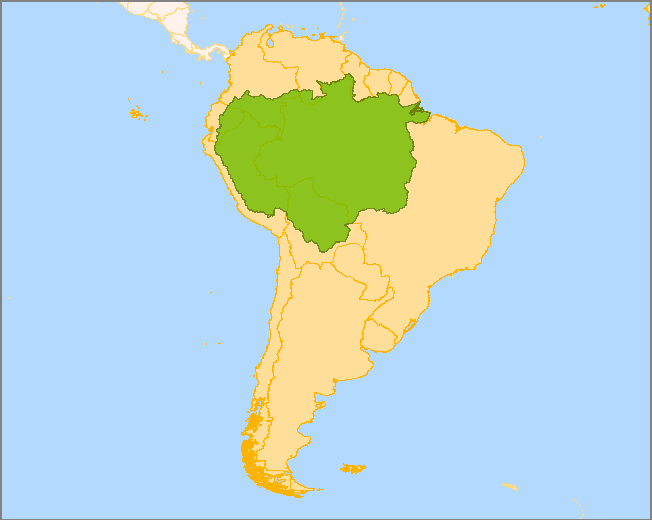

Amazon
The Amazon is a vast region that spans across eight rapidly developing countries: Brazil, Bolivia, Peru, Ecuador, Colombia, Venezuela, Guyana, Suriname and French Guiana, an overseas territory of France.
WWF Projects
The Natural Capital Project
- The Natural Capital Project—a partnership among WWF, The Nature Conservancy, University of Minnesota and Stanford University—works to provide decision makers with reliable ways to assess the true value of the services that ecosystems provide.
Transforming Peru's forest sector
- Illegal logging is more prevalent in Peru than in most countries around the world. The majority of the timber from Peru is harvested illegally. But the Peruvian government—with help from WWF and others—is turning this situation around. Together, they are transforming and modernizing Peru’s forest sector.
Securing a Future for Forests and Communities in Bolivia
- Indigenous communities control 30 percent of forested land in the Bolivian lowlands. The sustainable management of this land is essential to ensuring a prosperous future for Bolivia, its indigenous people and the environment. In this country and elsewhere, WWF plays a key role in helping community organizations strengthen their ability to promote sustainable forestry.
|
 |